Calculatrice
Unités, devises, cryptos, fuseaux (« 5pm ldn in sf »), dates (« lundi dans 3 semaines »), couleurs hex, rgb, hsl, lab, oklch, bases, px/rem, historique.
Un lanceur pour macOS · open source
Une touche, ⌥Espace, et tout le Mac tient dans une barre : apps, calculs, presse-papiers, snippets, fenêtres, IA et extensions Raycast.
Natif, gratuit, inspiré de Raycast, fonctionnalités Pro comprises. Vos données restent sur le Mac, sauf ce que vous envoyez vous-même à un service.
12 Mo · macOS 14 ou plus · licence MIT
01 La barre
Une seule barre pour lancer une app, convertir des dollars, demander l’heure à Tokyo ou poser une question à l’IA. Cette vidéo est une vraie session : chaque image est un rendu de l’app.
02 Le spectre
Un prisme décompose la lumière blanche. Prism décompose votre Mac en six familles de commandes, toutes au même endroit.
λ 647 nm · Rouge
Apps, commandes, réglages système, fichiers, contacts, jeux Steam : la recherche est floue, sans accents, et accepte les initiales (« vsc »).
La calculatrice répond pendant que vous tapez : unités, devises et cryptos au taux du jour, fuseaux horaires, dates, couleurs, bases, pourcentages à la Soulver. ↵ copie le résultat.
Réponses réelles de la calculatrice, relevées le 15 octobre 2026.
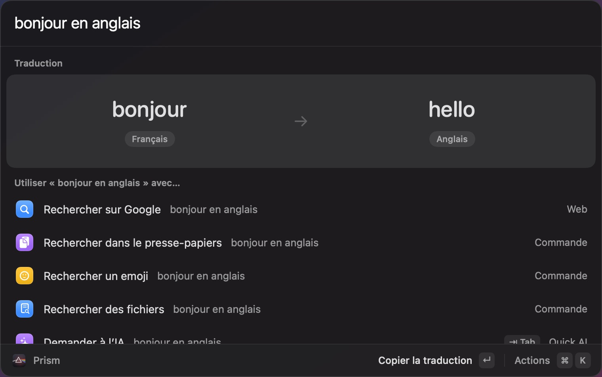
λ 569 nm · Orange
Tout ce que vous copiez est gardé : texte, texte riche, images, fichiers, liens, couleurs. Le texte des images est reconnu, les QR codes aussi. Épinglez, renommez, collez en texte brut ou en séquence.
Les snippets se développent dans toutes les apps : tapez ;sig, la signature apparaît. Placeholders {clipboard}, {date}, {cursor}, import et export au format de Raycast.
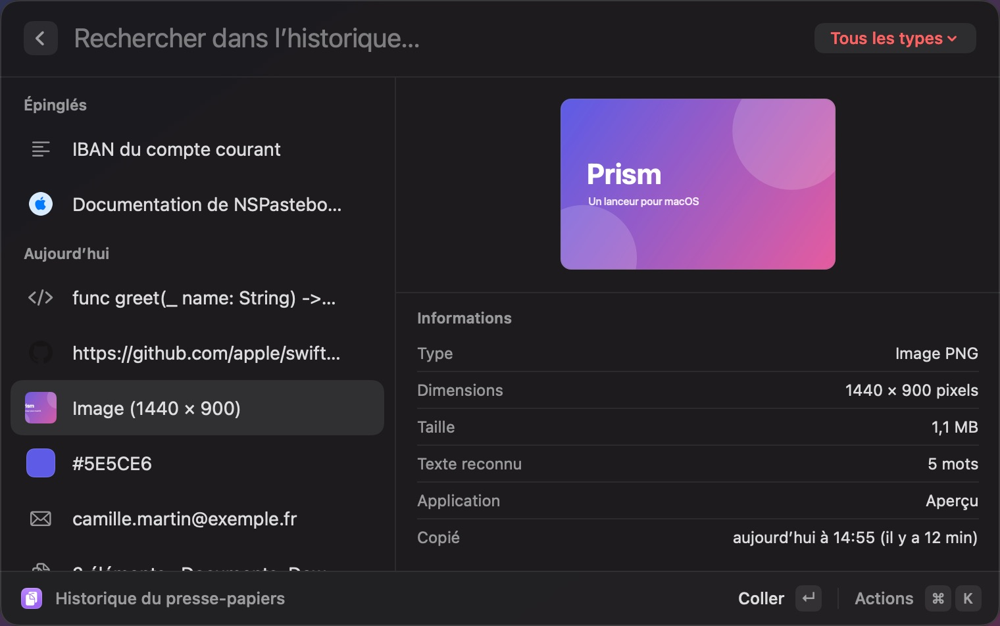
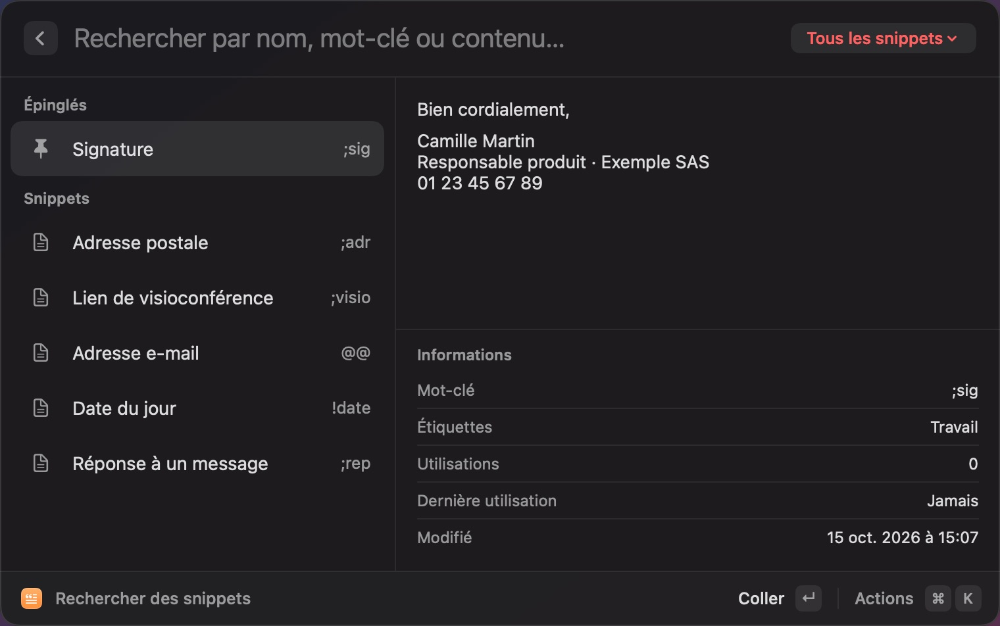
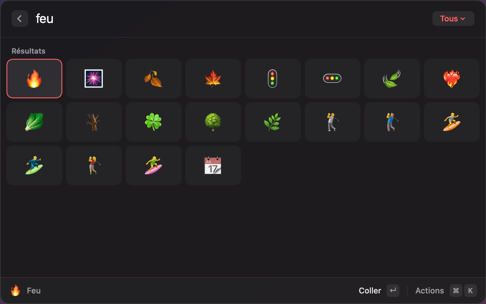
λ 513 nm · Jaune
Tab envoie la saisie à Quick AI. Une fenêtre de chat complète (historique, branches, pièces jointes, dictée), des commandes d’IA qui remplacent la sélection.
Apple Intelligence tourne sur l’appareil, gratuit et par défaut. Ou Ollama, OpenAI, Anthropic, avec vos clés rangées dans le trousseau. Pas de crédits à acheter.
SKILL.md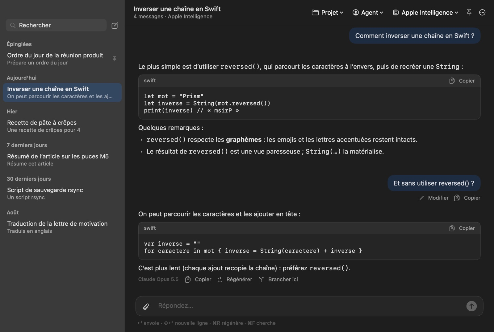
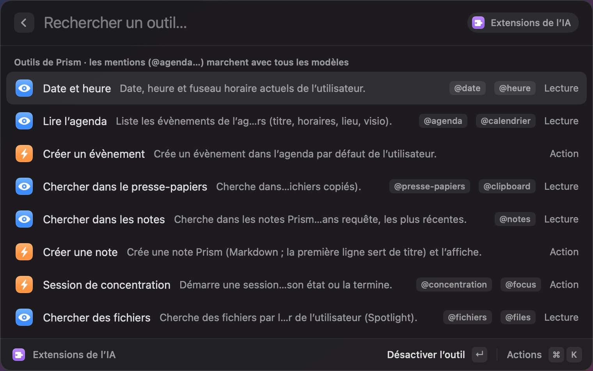
λ 471 nm · Vert
38 rangements : moitiés, tiers, quarts, sixièmes, agrandir, centrer, écran suivant. Un raccourci répété fait défiler ½, ⅔, ⅓. Vos dispositions s’enregistrent et se rappellent d’un geste.
Wi-Fi, Bluetooth, son, micro, apparence, Night Shift, mode avion, caméra, volume par app : sans ouvrir les Réglages Système.
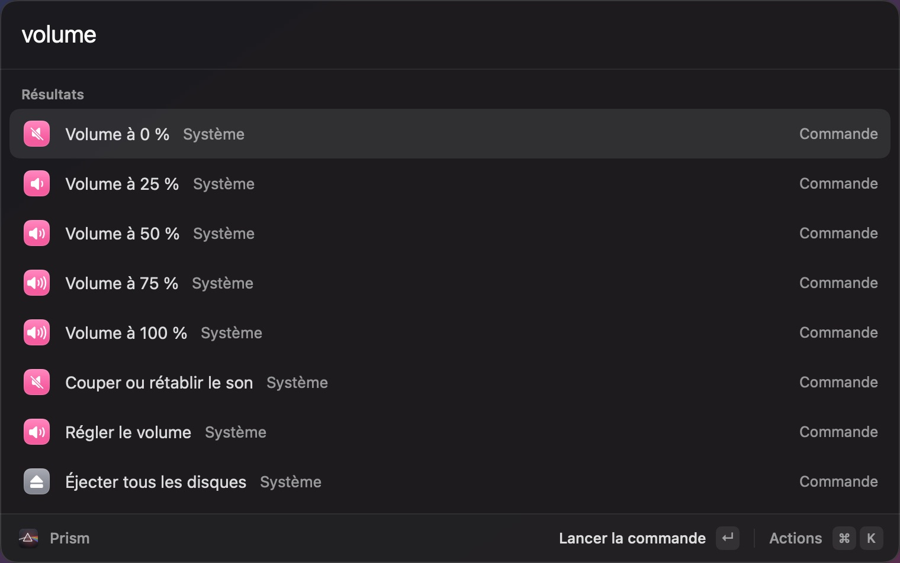
λ 438 nm · Bleu
Une note flottante en Markdown vivant : titres, tâches, code, liens, menu « / ». Des sessions de concentration qui bloquent les apps et les sites qui dispersent. La dictée sur l’appareil, avec un nettoyage par règles ou par l’IA.
Votre agenda dans la barre : la prochaine réunion, la visio à rejoindre (Zoom, Meet, Teams), un évènement à créer ou un créneau à bloquer.
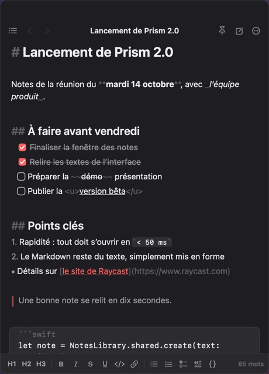
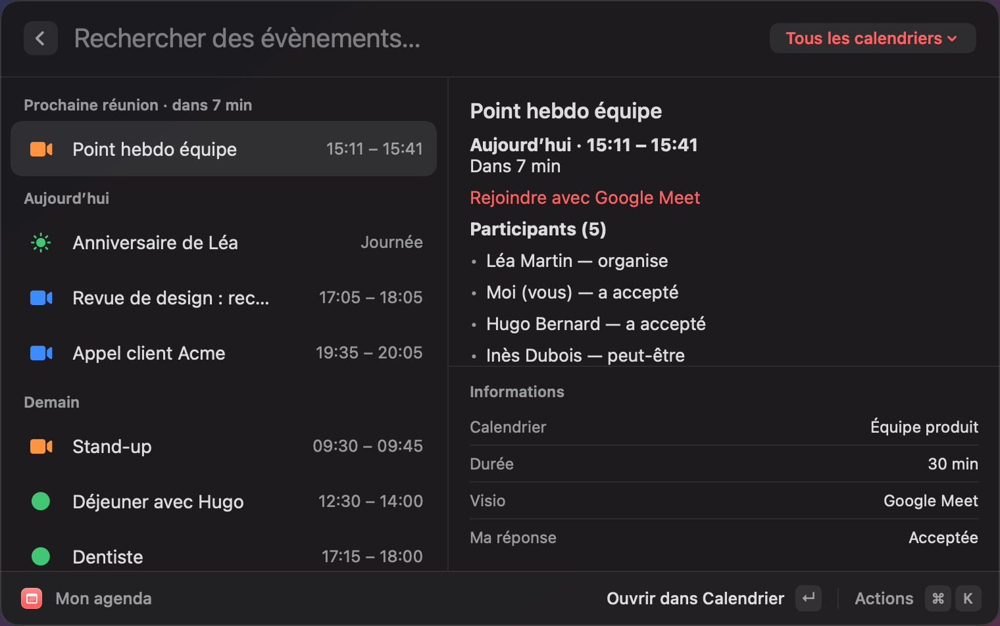
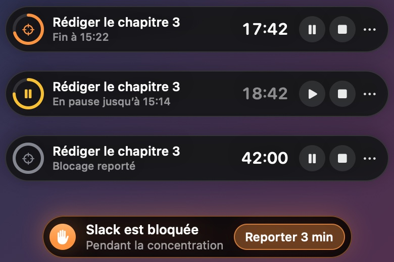
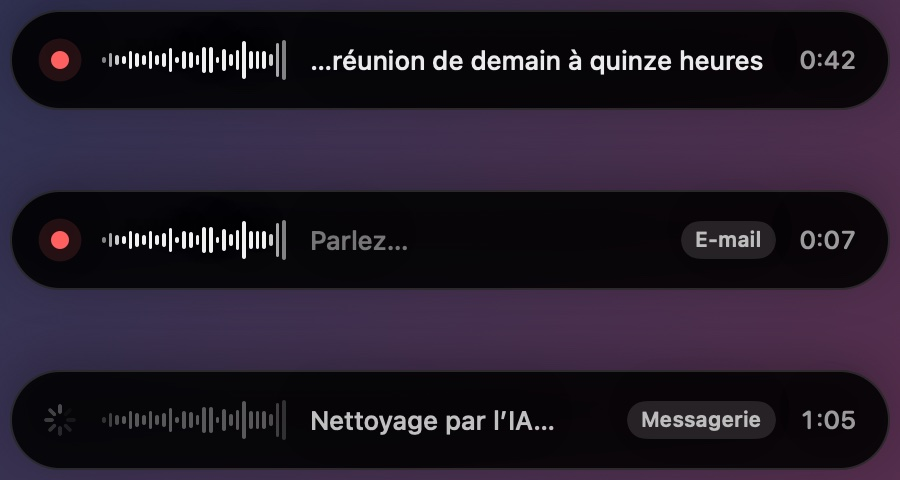
λ 411 nm · Violet
Le Store d’extensions de Raycast s’ouvre dans Prism : recherche, installation, mises à jour. Les extensions tournent dans Node.js, sur une réimplémentation de @raycast/api : listes, grilles, formulaires, actions, barre des menus, OAuth.
Et les quelque 850 script commands de la communauté, à lire puis installer d’un geste. Vous développez une extension ? Le mode développement la recharge à chaque modification.
@raycast.*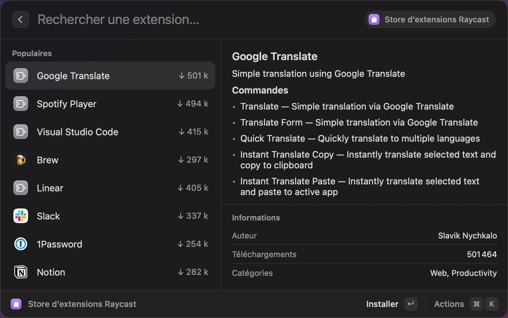
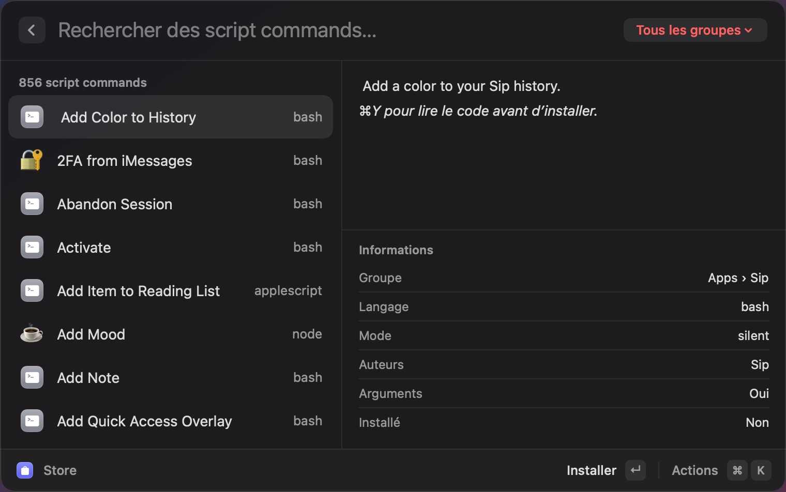
03 Thèmes
Huit thèmes sombres, quatre clairs, plus Prism sombre et Prism clair. Prism suit l’apparence du Mac, et un éditeur exporte vos thèmes en JSON.
Prism sombre
04 Tout le reste
La liste complète est dans le README. Ou appuyez sur ⌥Espace pour la parcourir comme dans Prism.
Unités, devises, cryptos, fuseaux (« 5pm ldn in sf »), dates (« lundi dans 3 semaines »), couleurs hex, rgb, hsl, lab, oklch, bases, px/rem, historique.
Spotlight en deux colonnes, aperçu Quick Look, dossiers à parcourir. Captures d’écran en grille, avec OCR et filtres name: text: date:.
Traduction Apple sur l’appareil, détection de la langue, « bonjour en anglais » dans la recherche, lecture à voix haute.
Une bibliothèque modifiable, avec arguments, l’app de votre choix, l’onglet déjà ouvert, favicons et étiquettes.
1 915 emojis en français et en anglais, tons de peau, 360 symboles Unicode, mots-clés personnels, suggestions de l’IA par le sens.
Barre latérale, ⌘1 à ⌘9, branches, archivage, fichiers joints, dictée, créativité réglable, notifications quand une réponse arrive en arrière-plan.
Envoyer à l’IA la fenêtre active, la sélection, l’écran ou une zone.
Requêtes et jetons par jour et par modèle, coût estimé, budget mensuel qui bloque les modèles payants une fois atteint.
Nouvelle fenêtre, fichiers récents, forcer à quitter, redémarrer, désinstaller avec les fichiers d’assistance.
Verr. Maj devient ⌃⌥⌘ (et ⇧ si vous voulez) ; un appui bref garde son rôle.
Créer un évènement avec invitation, bloquer du temps, prochaine réunion dans la barre des menus, appeler ou écrire à un contact.
Comme Raycast Teams, par un dossier partagé : snippets, liens rapides, commandes d’IA et agents publiés par chacun.
Export chiffré .prismconfig, synchronisation par iCloud Drive, sauvegardes programmées.
Compatibles avec les script commands de Raycast : modes silent, compact, fullOutput, inline, arguments.
Une app compagnon pour l’IA, les notes, les snippets et les liens rapides, synchronisés par iCloud Drive. À construire depuis les sources.
Mes statistiques, mode jeu, lanceur de jeux, et des confettis.
Ce qui n’a pas d’équivalent. Les comptes Raycast (connexion, facturation, SSO) : Prism n’a pas de serveur, la synchronisation et l’équipe passent par un dossier. L’IA hébergée par Raycast, dont la génération d’images : Prism utilise les fournisseurs que vous configurez. Windows. Et l’app iPhone n’est pas sur l’App Store.
05 Installer
macOS 14 ou plus, sur Apple silicon ou Intel. Apple Intelligence sur l’appareil demande macOS 26 et une puce Apple ; les extensions Raycast demandent Node.js 18 ou plus.
Ouvrez le zip de la dernière release et glissez Prism.app dans Applications.
Télécharger Prism 2.0Prism n’est pas notarié par Apple : au premier lancement, macOS le bloque. Réglages Système › Confidentialité et sécurité › Ouvrir quand même. Ou dans le Terminal :
xattr -dr com.apple.quarantine /Applications/Prism.appC’est parti. Pour coller dans les apps, ranger les fenêtres et développer les snippets, ajoutez Prism dans Confidentialité et sécurité › Accessibilité.
Les Command Line Tools suffisent (xcode-select --install). Le script construit Prism.app, l’installe et le lance.
git clone https://github.com/Guillaume69/prism.git
cd prism
./scripts/install.sh